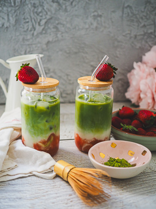
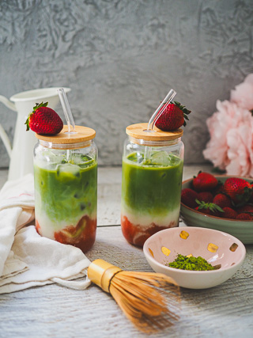
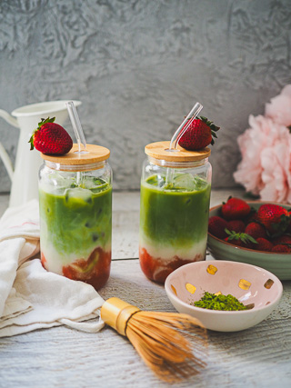
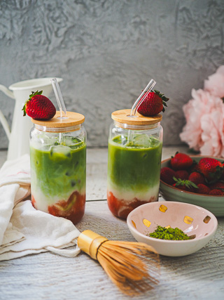

Matcha originated in China but the production of compressed tea, the raw material for matcha, was banned in China in the 14th century.[9] Shade growing was invented in Japan in the 16th century[10] and most matcha is produced there today.[11] The traditional Japanese tea ceremony, typically known as chanoyu (茶の湯) or sadō/chadō (茶道), centers on the preparation, serving and drinking of matcha as hot tea, and embodies a meditative and spiritual practice.
Drinking koicha is considered as the main part of Japanese tea ceremony,[32] while drinking usucha is considered as a sub part of it.[33] In the ceremonies, matcha is stored and made using a special teaware called chaki. Specifically, matcha for koicha and usucha are stored in special containers, chaire (茶入) and natsume (棗), respectively. Prior to use, the matcha can be sifted through a sieve to reduce clumps.[34] Matcha is scooped out from these containers by chashaku (茶杓), a traditional Japanese spoon. Matcha and hot water are then put in a chawan (茶碗), the bowl, and stirred with chasen (茶筅), a whisk usually made from bamboo. It is drunk from the chawan. One drinks matcha after finishing (not during) eating sweets in order to allow a prolonged taste of the matcha.
The combination of caffeine with l-theanine in matcha green tea provides a stable and extended boost of energy without the anxious jitters or side effects like you might have previously experienced with coffee and energy drinks. The caffeine will gently pick you up, provide you with an extended energy boost and then will let you softly back down to earth. HERE'S THE SECRET: Matcha is 100% powdered green tea that gives you clean energy without excessive caffeine, sugar content and unknown chemicals. But don't worry, one scoop of Tenzo Matcha still contains same caffeine as one shot of espresso, but the energy lasts for hours!
Some things simply require a lot of thought. The combination of caffeine and l-theanine do wonders for concentration* (11). L-theanine boosts the production of alpha waves in the brain. These alpha waves encourage relaxation and induce a profound feeling of mental clarity and a more alert state of mind - the same mental state can be found in meditation and yoga practice. You know what you’re doing. Matcha is here to make sure everybody else does, too.
Concerts are sick. Your friend’s new mixtape is sick. Being sick, however, is not sick. Matcha green tea Fortifies the immune system and limits the invasion and growth of viruses and bacteria in the body. The special catechin antioxidant called EGCg is effective in fighting and protecting the body against various bacterial and viral infections* (21). EGCg binds to cells in the body and inhibits the growth of many disease-causing microorganisms including influenza A virus, Hepatitis Virus, Herpes Virus, and the bacteria that causes Strep Throat.
Want to go the extra mile? Try adding matcha to your weight loss program and see what happens. EGCg and caffeine work together to naturally boost your metabolism and increase the number of calories you burn on a daily basis. Matcha green tea utilizes fat as an energy source. Green tea catechins activate the body’s thermogenic fat burning activity* (13). In a 12-week study, it was found that ingesting green tea led to a significant reduction in BMI, waist circumference, body fat mass, and subcutaneous fat area of healthy Japanese men and women* (14). Bet your last workout wasn’t that easy!
Stay calm for this: Matcha green tea can help protect you from a heart attack or stroke* – and matcha green tea powder may be much more effective than steeped green tea when it comes to heart health (20). Introducing matcha green tea into your regular diet may significantly lower your risk of having a stroke or heart attack. Of course, matcha isn’t all you need for a healthy heart. Experts recommend a healthy and regular eating pattern that includes whole grains, fruits and vegetables, fish, and foods that are low in sugar, fat, sodium and cholesterol. Eating right and exercise are key to a healthy heart!
One study looked at how people performed on a series of tasks designed to measure brain performance. Some participants consumed either matcha tea or a bar containing 4 grams of matcha, while the control group consumed a placebo tea or bar (22). The participants performed a set of cognitive tests assessing attention, information processing, working memory, and episodic memory (23) (24). The researchers found that matcha caused improvements in attention, reaction time and memory, compared to the placebo*. Another study showed that consuming 2 grams of green tea powder daily for two months helped improve brain function in elderly people (25). After drinking 2 grams of matcha green tea every day for 3 months, the participant’s mental state examination scores improved significantly*. If only we had Matcha in high school!
L-theanine is a rare amino acid found in high concentrations in matcha that crosses the blood-brain barrier and promotes a feeling of relaxation while reducing mental and physical stress* (9). L-theanine works with caffeine to provide a stable extended boost of energy with none of the usual jittery side effects of caffeine and stimulants. It’s a mouthful, but l-theanine has a lot to do with the relaxed state of mind you experience when you’re on matcha. Fun fact - l-theanine also gives Tenzo matcha its subtle sweet flavor* (10).
Matcha Green Tea has the highest antioxidant rating of all major superfoods, and there’s even a test to prove it. According to The ORAC (Oxygen Radical Absorption Capacity) test, which measures the antioxidant levels in foods, Matcha Green Tea measures 1384 units per gram* (2). That’s 13x the antioxidants of pomegranates, 15x the antioxidants of blueberries, and 125x that of spinach. Say hello to feeling invincible!
Catechins are a rare group of molecules that have proven to be incredibly potent and beneficial antioxidants* (3). One Specific Catechin, called EGCg, makes up a large percentage of the total catechins in matcha green tea. This super molecule aids in weight loss and promotes a healthy brain and heart health. Matcha green tea and cocoa are the two best places to find catechins - Tenzo Tea and Chocolate!
90% of bad breath comes from bacterial cavities in your mouth. This is
where bacteria breakdown sulfur-containing amino acids into foul-smelling
volatile sulfur compounds (VSCs) (16). If the bacterial colonies in your
mouth get out of control, bad breath will begin to run wild. You don’t
want that (and neither do we). Good news: When tested against gum, mints
and other foods, green tea showed the largest reduction in the
concentration of both H(2)S and CH(3)SH gases* (17). The antibacterial
properties of green tea keep the bacteria (and your breath) at bay. Land
ho.
GREEN TEA VS COFFEE?
Coffee is very acidic, which means bacteria reproduce faster than your
morning commute (18). When you add milk, creamers and even non-dairy
creamers to your coffee, the overgrowth of bacteria in your mouth
continues to get worse. Matcha keeps your teeth strong and healthy. If you
drink your matcha green it will help prevent the formation of cavities by
preventing plaque build-up and inhibiting bacteria* (19). Find a dentist
who wouldn’t recommend that.
Can you lose weight with matcha? Matcha contains EGCg (epigallocatechin gallate), which increases CCK (cholecystokinin), the hormone responsible for making you feel full* (12). Drinking matcha between meals will help you feel full and resist those sneaky snacks that are full of calories. Psst.. Sometimes we overeat when we’re cranky. Drinking matcha puts you in a better mood, makes you feel more relaxed and results in happiness. As a result of this phenomenon, you won’t need to snack or overeat to feel good.
Oxidative stress is a real thing, and it occurs when oxygen-free radicals overwhelm the body and damage cells. This can lead to a wide range of illnesses and diseases including cancer, gene mutations, Parkinson’s disease, Alzheimer’s disease, heart attack and heart failure. The antioxidants in matcha actively seek out these molecules in the body and neutralize their harmful effects* (4)! It’s easy to prevent oxidative stress. Just be sure to have a constant supply of naturally occurring antioxidants in your diet. Anti-oxidants … Get it?
One of the many green tea benefits has to do with the fact that matcha is
great for your skin! You can even make a matcha face mask and use it in
all sorts of ways for beauty and skin care. The catechins in green tea
work to trap and deactivate free radicals in the skin, which slows down
signs of aging. Applying matcha directly to the skin in the form of a mask
is one of the best ways to fight acne and symptoms of rosacea* (5).
REDUCE REDNESS
Matcha powder has many anti-inflammatory properties*, especially EGCg,
that reduce the redness associated with chronic skin conditions such as
rosacea and acne. It is gentle enough for all skin types and brings
soothing relief. Not only will your skin feel better, you’ll look better,
too! Matcha diminishes redness, meaning you can walk out of your house
with a face of confidence (6).
IMPROVE YOUR COMPLEXION
Matcha powder does crazy things to keep your complexion fresh and healthy.
Not only does it reduce inflammation, it also offers a one-two punch for
the skin to exfoliate and eliminate dead skin cells, then rejuvenate the
underlying skin to improve your complexion. The only thing you’ll see is a
better looking version of yourself!
“YOU LOOK GREAT!”
Thanks! That’s because matcha powder diminishes the signs of aging. Let’s
face it. This is one of the biggest reasons we take care of our skin.
Matcha protects against UV damage and improves skin elasticity* (7). It
even stimulates elastin production to add volume to the skin and protects
it against those free radicals cause sun damage, age spots, dry skin, and
yes, wrinkles.
YOUR FACE IS NOT AN OIL REFINERY
And it doesn’t have to feel like one. Oily skin is one of the leading
reasons why we have breakouts. The good news? Matcha treats oily skin. The
tannins in matcha actually shrink pores and reduce the production of oil
associated with acne. Matcha is especially beneficial as it removes oil
from the skin and slows the production of the oil causing the acne.
ALL SKIN TYPES, WELCOME
Matcha masks are made from food, not chemicals, which makes it about the
most natural skin care product out there. That’s why it is gentle enough
for younger skin yet strong enough for skin that needs a little boost to
look better. Not all heroes wear capes.
Studies of different populations revealed that people who drink Matcha green tea on a regular basis have lower levels of LDL (read: bad) cholesterol*, while at the same time displaying higher levels of HDL (read: good) cholesterol. HDL sweeps away bad cholesterol from arteries, preventing atherosclerosis. The clogged arteries that result from atherosclerosis can lead to a heart attack or stroke. Long story short, avoid LDLs. Proof: The first human study to show that green tea reduced LDL cholesterol was conducted by Vanderbilt University Medical Center in 2003. During a 12-week trial, study participants took 375 mg capsules containing an extract of green tea. The levels of polyphenols in the capsules were equivalent to the amount found in 35 cups of green tea or 3.5 cups of matcha. The results showed a 16 percent reduction in cholesterol* - even the researchers were surprised (15)!
Matcha leaves are shade-grown and, when you throw shade at plants, they produce extra chlorophyll in their leaves. Green tea has powerful detoxifying properties and in some cases has the ability to naturally eliminate heavy metal ions from aqueous solutions* (1).
Whatever it was, the answer is yes. A study performed by the University of Basel, Switzerland found that green tea increased the working memory performance of participants and increased the brain’s effective connectivity, leading to improvements in cognitive performance* (26). The results of the study showed that those who drank matcha performed better on the short-term memory tests and showed higher brain function in the frontal and parietal lobes of the brain. The frontal lobe is responsible for the majority of advanced thinking while the parietal lobe in the back of the brain handles the cognitive understanding of speech. The MRI scans revealed that those who drank matcha had more interaction between the two areas, boosting information recall and the speed of which they processed information.
Green tea polyphenols are now being considered therapeutic agents in well-controlled studies, aimed to alter brain aging processes and to serve as possible neuroprotective agents in progressive neurodegenerative disorders*. If that sounds clunky, here’s why it’s important: Those neurodegenerative disorder include Parkinson’s and Alzheimer’s diseases (27). And perhaps Matcha Tea can protect against them*.
Matcha tea is one of the most-studied drinks when it comes to its benefits for arthritis patients. Green, black and white teas are all rich in polyphenols – compounds from plants that have strong anti-inflammatory effects* (28). Studies have shown that green tea also helps preserve cartilage and bone. Green tea has polyphenols, antioxidants believed to reduce inflammation and slow cartilage destruction. Studies also show that another antioxidant in green tea called epigallocatechin-3-gallate (EGCg) blocks the production of molecules that cause joint damage in people with rheumatoid arthritis (RA). Antioxidant-rich green tea may be useful in the prevention of onset and severity of arthritis* (29). Whether your wrist is sore, or you just don’t wait it to be, Good Matcha will be sure to make you feel better!
Both are important, but a lot of us forget to take them. Tea is one of the
most-studied drinks when it comes to its benefits for arthritis patients.
Green, black and white teas are all rich in polyphenols – compounds from
plants that have strong anti-inflammatory effects. Studies have shown that
green tea also helps preserve cartilage and bone mass. Got tea?
VITAMIN A (CAROTENE)
Several types of carotene exist in tea leaves but B-Carotene is the most
common. B-Carotene converts to Vitamin A once absorbed in the body and has
shown to help promote better vision and eliminate free radicals with its
strong effects as an antioxidant.
VITAMIN B1 (THIAMINE)
Thiamine is an essential nutrient because people are unable to produce it
within the body. It’s necessary for the proper metabolism of sugar, amino
acids, and lipids. Thiamine is especially important for people who depend
on rice as their primary source of nutrition.
VITAMIN B2 (RIBOFLAVIN)
Riboflavin helps cells utilize oxygen most efficiently and is necessary
for normal cell growth like red blood cell formation and antibody
production. It also helps tissues of the skin, hair, nails, and hair
utilize oxygen more efficiently.
VITAMIN B3 (NIACIN)
Niacin helps the body break down carbohydrates, fat, and proteins to
release energy. In addition, it has a wide range of functions that serve
to help the skin, digestive system, and the nervous system. Studies that
show niacin can boost levels of good HDL cholesterol and lower
triglycerides. There is also good evidence that it helps to reduce the
hardening of arteries and can lower the risk of a heart attack.
VITAMIN C
Vitamin C, also known as ascorbic acid, is an antioxidant vitamin that
eliminates free radicals from the body. It is an essential nutrient
involved in the repair of tissue and the production of specific
neurotransmitters. In addition, Vitamin C has antiviral and antibacterial
properties that assist in preventing sickness and is important for a
healthy immune system. Fermented teas (like black and oolong tea) contain
far less Vitamin C because it is destroyed in the fermentation process.
VITAMIN F (FLUORINE)
Fluorine is particularly abundant in the Camellia family of plants. It
adheres to the surface of teeth and produces an antioxidant coating that
helps the fight against cavities.
VITAMIN P (FLAVONOIDS)
Tea is one of the most-studied drinks when it comes to its benefits for
arthritis patients. Green, black and white teas are all rich in
polyphenols – compounds from plants that have strong anti-inflammatory
effects. Studies have shown that green tea also helps preserve cartilage
and bone.
Making Matcha couldn't be easier. The goal is to suspend your beautiful green tea powder with water. The best three ways to do this are with a bamboo whisk, a shaker bottle or blender. MATCHA LATTE: To make a matcha latte, start with a Tenzo shot and add your choice of milk to top it off. MATCHA LEMONADE: To make a Matcha Lemonade, start with a Tenzo shot, add some ice and fill your glass with lemonade. We put together a ton of easy matcha recipes that you can make in 5 minutes or less. You can find them here. We love matcha and hope you will too!
Green is the embodiment of health, but just because matcha looks healthy doesn’t mean it has to taste like grass. Some teas require sugar, milk and lemon to make them drinkable, but the best matcha tea is wonderful on its own. Ceremonial matcha has a delicious vegetal flavor that is complemented by savory umami notes and tastes great both hot and over ice. So sit back, relax, and enjoy a delicious cup of matcha green tea.
Start by macerating the strawberries. Use a fork to mix them with the sugar, lightly mashing them as you mix. Set them aside while you prepare the matcha.Next, prepare the matcha tea in two easy steps: Sift the matcha into a small bowl. High quality matcha likes to clump! The clumps are nothing to worry about—they’re totally normal especially with ceremonial grades. To break them up, it’s important to sift the matcha before mixing it with liquid. If you need, Matcha.com has a range of matcha tools – sifters, bamboo whisks, and more! Whisk the matcha with 1/4 cup water. Add the water to the bowl with the matcha and whisk vigorously from side to side—not in a circle. The lateral motion helps evenly disperse the tea in the water and create a foamy layer on top. A chasen, or bamboo matcha whisk, is traditionally used for this. To assemble the strawberry matcha latte, place the strawberries at the bottom of a large glass. Fill the glass halfway with ice, and then pour in enough milk to fill the glass two-thirds of the way full. Finally, pour the matcha tea on top. Stir with a straw and taste. If you’d like the strawberry matcha latte to be sweeter, add honey or maple syrup as desired. Enjoy!